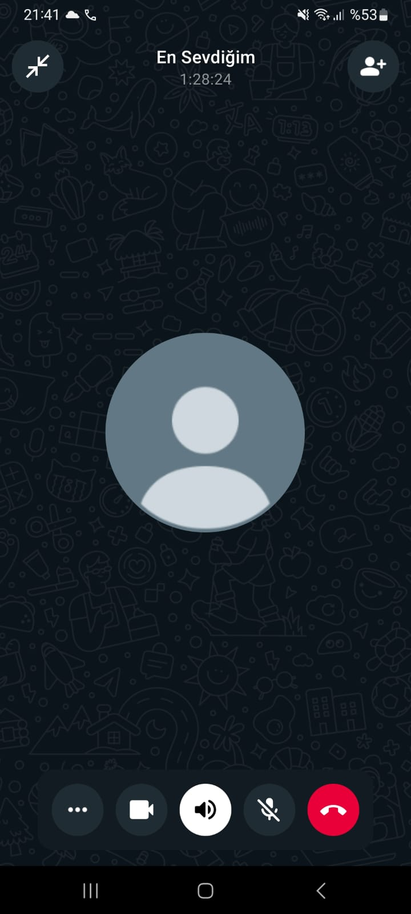

İyi ki Doğdun Meryem! 🎉
Sen bu dünyaya güzelliğinle ışık saçmaya geldin. 🩷
Aramızda kilometreler olsa da, kalbim hep senin yanında.
Belki bu doğum gününde yanında olamadım ama kalbim, düşüncelerim ve sevgim hep seninle...
Bu sadece bir konuşma değildi Meryem... Bu 1 saat 30 dakika boyunca kalbim huzur buldu. Sesin, kelimelerin, gülüşün... Hepsi bana iyi geldi. Sen konuştukça dünya sessizleşti, sadece sen kaldın, sadece ben ve sen.

Ne zaman fotoğrafına baksam içim titriyor. Çünkü sen sadece güzelliğinle değil, kalbinle de büyülüyorsun. Gözlerin, içimdeki tüm karmaşayı susturan bir deniz gibi… Meryem, sana her baktığımda biraz daha aşık oluyorum. Bu siteyi yaparken her kod satırında seni düşündüm. Çünkü sen… özel bir hediyesin bana.
Seninle geçirdiğim her anın değerini anladım. Eskiden yaptığım hatalar için pişmanım ama şimdi... Şimdi sadece sen varsın. Gelecekte bir gün, bu siteye birlikte bakıp güleceğiz, "Hatırlıyor musun?" diyeceğiz. O güne kadar hep seni seveceğim.
Sonsuza kadar seninle ❤️